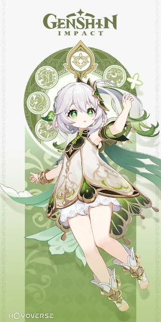

Sumeru · Character Records
Nahida and Lesser Lord Kusanali
Nahida is Sumeru’s Dendro Archon, born from an Irminsul branch. Later quests tie her to Aaru, Collei’s recovery, and a Trial of Usurpation about wisdom.

The Dendro Archon born from Irminsul
Nahida is the Dendro Archon, known as Lesser Lord Kusanali and Buer. The Archon Quest reveals that Greater Lord Rukkhadevata created her from a branch of Irminsul during the Cataclysm. Nahida became her successor; the story does not frame her as Rukkhadevata simply revived with the same memories.
The sages of the Akademiya confined Nahida in the Sanctuary of Surasthana for five hundred years and used her power to operate the Akasha. Her isolation and their control of the system are central to Sumeru’s Archon Quest.
The Sabzeruz samsara and liberation
During the Sabzeruz Festival, the sages use the Akasha to harvest the dreams of Sumeru’s people and power their plan to create Shouki no Kami. Nahida assists the Traveler through hints, restored memories, and shared dream logic while Dunyarzad and the people face the cost of the experiment.
The Traveler and Sumeru’s allies defeat the artificial god and free Nahida. She later enters Irminsul and fulfills Rukkhadevata’s request to remove the corrupted memory that keeps Forbidden Knowledge in the world tree. The resulting change rewrites the memories and records of Teyvat; the Traveler retains knowledge that Nahida herself loses. Nahida then switches off the Akasha.
Apep, the Flower Goddess fragment, and Aaru
Nahida’s second Story Quest brings her and the Traveler to Apep, whose body has accumulated Forbidden Knowledge. When Nahida loses strength, the Traveler turns to Apep’s Heart of Oasis as part of the effort to restore her.
Song of the Welkin Moon: Act IX reveals that Nicole recognizes a small fragment of the Goddess of Flowers’ remains in Collei, left there by a Fatui experiment. Act X later has Nahida describe Aaru as Irminsul-like, with her existence bound to it and Sumeru’s wisdom converging there. The story draws an analogy to Irminsul but leaves Aaru’s limits to be explored.
The Trial of Usurpation and wisdom
In Version 7.2, Nahida investigates a signal associated with the Nail of Retribution. She can hear it before others, maps its vibrations, and uses Aaru’s computational power to decode the answer as “dreams.” The signal opens a dreamscape for Sumeru’s Trial of Usurpation.
The dream presents alternate choices from the earlier Sumeru crises, including different ways the Shouki no Kami conflict could have been handled. Nahida concludes that wisdom has no single answer: differing views and divergent choices are part of its foundation. The trial accepts her interpretation.
A continuing role in Sumeru
Nahida’s later story places her alongside Sumeru’s scholars and citizens as they respond to crises, rather than keeping her isolated from the nation. Her work through Aaru and her participation in the 7.2 trial extend the question of how a god can serve people without replacing their judgment.
The current quests do not settle the full nature of Irminsul, Aaru, or the Nail’s signal. Those questions should remain open in a character guide that follows the game’s evidence.
This is an original CoreGG reading guide, not an official HoYoverse article or a reproduction of the game text. Source links below identify the records used so you can check the original context.
Sources & references
Check these sources for the original game text and reference trail.
- HoYoWiki · Nahida character record
- Teyvatica · The Morn a Thousand Roses Brings transcript
- Teyvatica · Homecoming, Nahida Story Quest Act II
- Teyvatica · As All Falls to Emptiness transcript
- Teyvatica · Of Myriad Paths, Flux, and Dissolution transcript
- Teyvatica · A Yesterday Sent From Beyond transcript